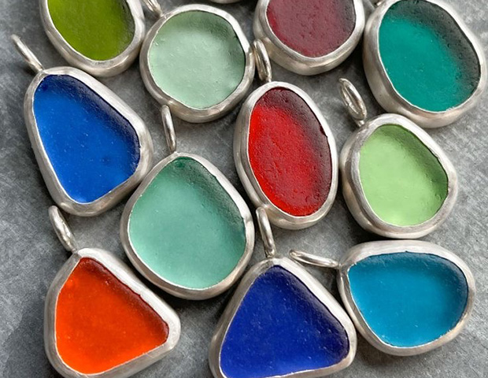

Tumlet glas
Tumlet glas ligner havglas fra naturen, men er altså “havglas” som vi selv skaber.
Når man laver tumlet glas bruger man en tumle maskine - ofte kaldet en sten tumler - til at slibe glasset. I tumleren skal der, udover det glas man gerne vil tumle, være noget slibemateriale og vand. på det måde kan man lave sit eget “havglas”.
Fordele ved at tumle sit eget glas
Der er et par fordele ved at tumle sit eget glas. At tumle sit eget glas giver en større frihed når det kommer til farver og til dels også form. Når man tumler glas selv, slipper man for at skulle lede efter den perfekte stump i naturen, som måske ikke helt passer til ens behov.
Ved tumling kan man vælge præcist de farver og størrelser, der passer til ens projekt eller smykke. Derudover får man et større udvalg af farver. Når man finder glasset i naturen kan man kun finde det som engang er blevet smidt i havet, derfor er nogle farver mere sjældne end andre. Men når man tumler kan man bruge lide den farve man har lyst til, hvilket åbner op for en bredere kreativ frihed.

Tumlet glas i smykker
Når det kommer til at bruge tumlet “havglas” i smykkedesign, er det især populært på grund af friheden til at vælge mellem rigtig mange smykke farver, som ikke altid er til at finde i naturen.
Når man tumler sit eget glas er man også mere involveret i hele processen. Fra at udvælge hvilket glas man gerne vil bruge, lave det til mindre stykker og putte det i tumleren.
Tumle processen
Der findes forskellige typer slibe sand, afhængigt af hvor fin man ønsker slibningen - groft sand giver hurtigere resultater, men kan også gøre overfladen mindre jævn, mens finere sand giver et mere poleret og glat resultat. Tumlingen kan vare fra et par dage til flere uger, afhængig af ønsket effekt.